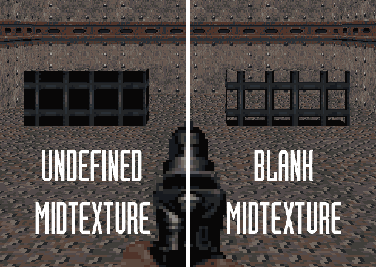

Textures
Textures are graphics that tile along geometry of levels. The original game included 503 textures, with some repeats, and some special textures used for rendering effects. The link below lists the original set of textures.
Texture Rendering
Although the Doom engine originally made a distinction between textures used on the walls and the floors/ceilings, the same textures can be used for either in Doom 64. There are rendering differences however.
The BLANK Texture
A big feature of Doom 64's 3D rendering is the BLANK texture. This texture is fully transparent, allowing geometry behind it to become visible. This is used to trim the top of bridges and floating objects by lowering sectors with the blank texture around the structure.
For rendering efficiency, the Doom 64 engine will not send sectors it believes not visible to the player to render. Thus, even with the blank texture being used, sectors behind it may not be shown to the player. The "No Occlusion" flag can be used on obscuring linedefs to fix this.
Floor/Ceiling Rendering (flats)
On the floor and ceilings, textures are streched to match a 64 unit square. For textures larger than 64x64 pixels it can result in inconsistent texture resolution with the walls. However higher resolution textures can work with water effects.
For the Nintendo 64 engines, wall and floor textures that are not 64 by 64 pixels will render with glitches.
For PC Engines, textures on the floors and ceilings will render partial transparencies. This can be used for ice and glass effects.
Wall Rendering
Walls are all rendered with consistent resolution. Thus the bigger the texture, the more of the wall it will extend across. Partial transparencies for walls are supported on the Doom 64 Remaster, however for Doom 64 EX and EX+ only the full transparency is rendered, while partial transparency is fully opaque.
To get the Remaster to show the transparency properly for lower textures, set the mid texture as blank. Otherwise their transparent parts will be black. This is why some Doom 64 textures have unusual transparent pixels, but show up as solid in the original game, because their transparent pixels were rendered as black.
Switch and Decal Textures
Switch textures, when not used as decals, come in pairs offset by one sequential character at the end. For example "SWITCHA" and "SWITCHB" are one such pair. When a switch is defined, one of the pair is selected, and when activated by a player, it will switch to the other of the pair.
On the PC engines, switch textures are resized to a 32x32 unit area. Thus the original Doom 64 switch textures are 32x32 pixels to keep a consistent texture resolution. However higher resolution textures can be used, which may be useful for effects like text screens on the wall. Also the use of the switch setup properties on a linedef can be used to add other decals to walls, like graffiti and stains, without using the full switch setup process.
Texure Bleed
Texture bleed occurs when an edge of a texture wraps to the other side as it is being tiled. This can cause seems and can be exacerbated with texture filtering. It most cases it is not an issue, but it can be compensated for.
Custom Textures
For all Doom 64 engines, textures are added to WAD files between the markers T_START and T_END. Due to the legacy of hardware rendering, the texture pixel sizes must be in a power of 2. This means they can be sizes of 2 pixels, 4 pixels, 8, 16, 32, 64, 128, 256, and so on. For all engines, the textures must be made in the PNG format initially.
PC Engines
PC engines support textures at any color depth. Partial transparencies are supported but only will be rendered properly depending on the engine and surface its rendered on as described in the prior sections. Below is an example WAD for your reference with a custom texture.
To allow for a large number of custom textures, that can be re-ordered in a WAD at any time, the textures names are hashed into numbers for the PC engines. Not all texture hash numbers are unique which can result in a texture showing up as another texture. The following page describes hashing in more detail and has a hash number generator to test texture names.
There is an unusual bug concerning switch textures on the Doom 64 Remaster. When using custom switch textures, sometimes activating them in game causes the switch texture to switch to an incorrect texture, that is not in the pair. Even if it was correct prior, adding new textures to a WAD can cause this issue to happen. The exact cause of this bug is currently unknown. Sometimes switching the texture order is enough to fix this. A more consistent fix is to put all of the switch textures (including the originals) at the top of the texture lump (before any other texture) and this seems to help maintain the proper order in the engine. Also it has been found cutting out the switch textures from the WAD, saving the WAD, and pasting the textures back into the WAD can fix this bug.
Nintendo 64
On the Nintendo 64 engines, textures are paletted with a total of 16 colors thus they are 4-bit images. The wadutil64 tool can convert appropriately-formatted PNGs to the format for the Nintendo 64.
Most graphics software do not have a specific option to save PNGs as a 4-bit format. However in GIMP you can set the texture to 16 colors by going to "Image" then "Mode", and then "Indexed...". You can select a custom palette of 16 colors or have it auto-generate one of 16 colors. Make sure to disable the option of "Remove unused and duplicate colors", as the final palette has to be exactly 16 colors. Note that GIMP doesn't consider transparency as a color, so if you have transparency you will need to select 15 colors so the transparency can be used in the 16th spot. Now when you export the image in GIMP as a PNG it should be in the right form for conversion.
Due to hardware limitations relating to the texture cache (TMEM) size, each individual (CI4) texture on the Nintendo 64 can only be 4096 pixels total maximum. Furthermore, the textures must be 8-byte aligned. This includes texture sizes such as: 64x64 pixels, 128x32 pixels, and 256x16 pixels.
On the original Doom 64 engine, switch textures are not resized to a 32x32 unit size. Instead, they are allowed to expand like a wall texture. However some engines, like Complete Edition, switch textures will be resized like the PC engines.
Instead of hashing texture names, maps refer to the textures based on their order in the WAD. Thus if you re-order textures in the WAD, it will scramble which textures appear in the maps. Doom Builder 64 has a specific Nintendo 64 map format to number textures in order based upon the Doom 64 IWAD you choose. You can also use Erick194's D64Tool to convert Doom 64 Remaster maps to the Nintendo 64 format automatically with the right texture numbering. Here you can add the custom textures you have added to the text file it references to. You will need to edit the Doom 64 source code, however, because it specifically references where the sky textures are and this will need to be accounted for when changing the total number of textures.